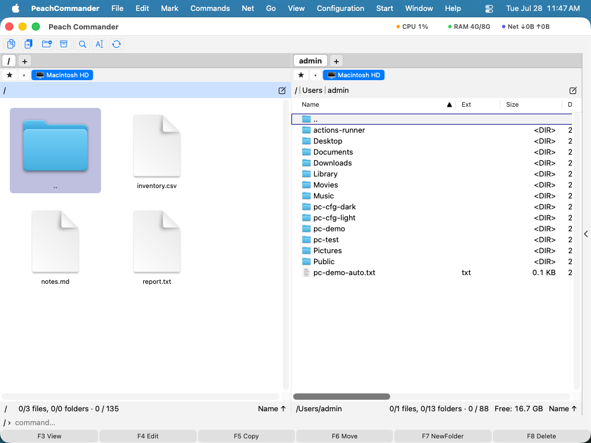

Робота з архівами
Peach Commander ставиться до архівів як до тек. Ви можете зайти всередину архіву ZIP, TAR чи іншого підтримуваного формату, переглянути його вміст і скопіювати з нього файли — усе без попереднього розпакування на диск. Коли ви хочете створити архів, команда Спакувати об'єднує ваш вибір у формат ZIP, 7z, TAR чи інший, з необов'язковим шифруванням і розділеними томами. Це зручно для пакування файлів для надсилання, зменшення теки для зберігання або зазирання всередину завантаженого файлу перед тим, як розпаковувати його.
Переглядайте архів як теку
- У панелі перемістіть курсор на файл архіву (наприклад,
.zipчи.tar.gz). - Натисніть Enter або Ctrl+PageDown, щоб зайти всередину, так само як ви відкрили б теку.
- Пересувайтеся вмістом як звичайно. Натисніть Backspace або Ctrl+PageUp, щоб піднятися вгору та вийти з архіву.
- Щоб витягнути файли, виділіть їх і скопіюйте (F5) до другої панелі.

(Малюнок: відкритий архів, показаний як звичайний список теки, з файлами, готовими до копіювання.)ZIP, TAR і TAR, стиснутий gzip, читаються напряму. Інші формати, як-от CPIO, ISO, CAB, LZH, XAR і PAX, читаються через вбудовані системні інструменти. Зашифровані архіви ZIP (як класичні, так і AES) можна відкрити, якщо ви надасте пароль.
Спакуйте файли в новий архів
- Виділіть файли та теки, які хочете включити, в активній панелі.
- Виберіть Файл ▸ Спакувати… або натисніть Alt+F5. (Щоб спакувати, а потім видалити оригінали, використайте Alt+Shift+F5.)
- У діалозі виберіть формат архіву (ZIP, 7z, TAR, tar.gz, bzip2, xz або RAR), рівень стиснення та місце збереження.
- За бажанням увімкніть шифрування AES-256 і встановіть пароль, або розділіть архів на томи фіксованого розміру.
- Підтвердьте, щоб створити архів.
 (Малюнок: діалог Спакувати, де ви вибираєте формат і встановлюєте параметри шифрування та розділення на томи.)
(Малюнок: діалог Спакувати, де ви вибираєте формат і встановлюєте параметри шифрування та розділення на томи.)
Розпакуйте або перевірте архів
- Помістіть архів для видобування в активну панель, а теку призначення — у другу панель.
- Виберіть Файл ▸ Розпакувати… або натисніть Alt+F9, потім підтвердьте призначення.
- Щоб перевірити архів на пошкодження без видобування, виберіть Файл ▸ Перевірити архів.
Редагуйте ZIP на місці
Ви можете додавати чи вилучати файли всередині наявного ZIP без його розпакування. Відкрийте ZIP як теку, потім копіюйте до нього файли або видаляйте файли як зазвичай — зміна записується прямо назад до архіву.
Скорочення
| Дія | Скорочення |
|---|---|
| Зайти в архів під курсором | Enter або Ctrl+PageDown |
| Вийти з архіву (піднятися) | Backspace або Ctrl+PageUp |
| Спакувати | Alt+F5 |
| Спакувати й видалити оригінали | Alt+Shift+F5 |
| Розпакувати | Alt+F9 |
Примітки
- Пакування до 7z, xz, bzip2 і RAR покладається на зовнішні інструменти. RAR зокрема потребує встановлення власницької програми RAR; без неї цей формат недоступний.
- Редагування ZIP на місці переписує весь архів, тож дати зміни файлів усередині нього не зберігаються.
- Дуже великі окремі елементи обмежені до 512 МіБ під час видобування. Видобування можна скасувати під час його виконання.
- Надзвичайно великі архіви (ZIP64) не підтримуються.